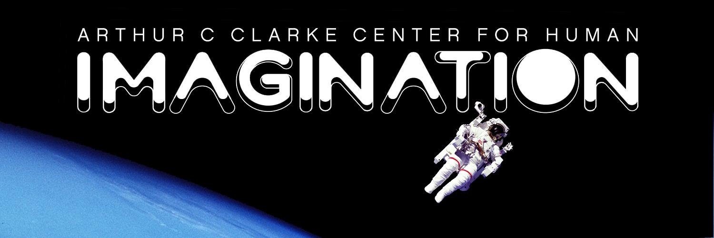
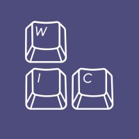
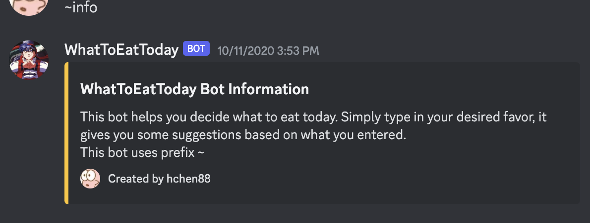

Welcome to my Spectrum!

Yo this is Haitong (陈 海 童 in Chinese) 👋
I love explaining what's behind my name:
陈 is my family name -- yes we put our last names first;
海 means the ocean. I was borned in the year of Dragon
in Chinese calendar, and dragons swim freely in the sea.
童 stands for kids. I got this because my parents want
me to keep the curious mindset and good nature in life.
I am a 1st year MSCS student at University of Michigan, Ann Arbor with an interest
in Natural Language Processing. I'm generally interested in the intersection of science and humanities,
and everything Computer Science can do in those fields.
Outside of school and work, I enjoy watching videos and cooking --
living a couch potato life. I also love travelling -- new food!
Contact me through my socials if you have any feedback on this site,
want to chat, have food rec, or just to say hi!
Education
-
M.S. Computer Science
Major Classes:
Natural Language Processing, HCI, Programming Languages -
B.S. Computer Science
Major Classes:
Data Structures, Algorithm Design, AI: Reasoning and Decision Making, Software Engineering, Operating Systems, Digital Circuit Design, Social Computing, Prototyping
WorkExperience
-
Research Assistant
Research assistant for a HCI project. Focused on an option proposer for group decisions. Worked on data processing and LLM to understand review text. -

CSE Instruction Assistant
Tutor for CSE 15L: Software Tools & Techniques. It's fun to run labs because I got to see how the materials we came up with together are delivered and played around. -

Amazon Web Services TAM Intern
Interned with AWS in Dallas, TX during Summer 2022. Learned a lot of AWS cloud computing services, and built a cloud architecture for a scenario involiving large-scale data transfer and storage. -

AR/XR Frontend Research Intern
Played around with Unreal Engine. Improved the performance of the in-game browser widget by adding authentic colors and more interactable features.
LeadershipExperience
-

Women in Computing Secretary
As the secreatry for WIC, I got to communicate with almost everyone on board which is fun! I also communicate with staffs on campus for room reservation requests, and keep track of active membership. -
WIC Winter Dev Team Lead
Being a team lead is also fun -- especially when I was the least experienced member.
OtherProjects
-

Social Computing App Design: PlanPal
PlanPal is an app that help people make faster decisions on hangout schedules by centralizing multiple features on different apps and give recommendations based on groups' preferences and hangout history.
It helps alleviate pressure on making decisions for groups and makes decision making clear streamline processes.
I got to learn how to turn a social computing idea into an actual design, and how user testings can give valuable design feedbacks. I also got to play with Voiceflow to build our prototype.
Link to Google Sites Portfolio -

Android App: San Diego Zoo Seeker
We made this Android app in course CSE 110 Software Engineering. Explored Android Studio and a lot of Java programming with it. This app helps people plan their visits to a zoo.
I also experienced UI design for apps. Moving buttons around and changing colors and events is so fun. I developed my interests in frontend design.
Link to Github Repository -

React App: Little Chief
A recipe browsing app by React! Developed during WIC Winter Dev Program as the team lead and one of the backend developers. Have a glimpse of web dev. -

Discord Bot: WhatToEatToday
A bot to help decide what to eat today? Sure! I built this bot since I myself is so indecisive, and I hope some technology to help me decide what to eat.